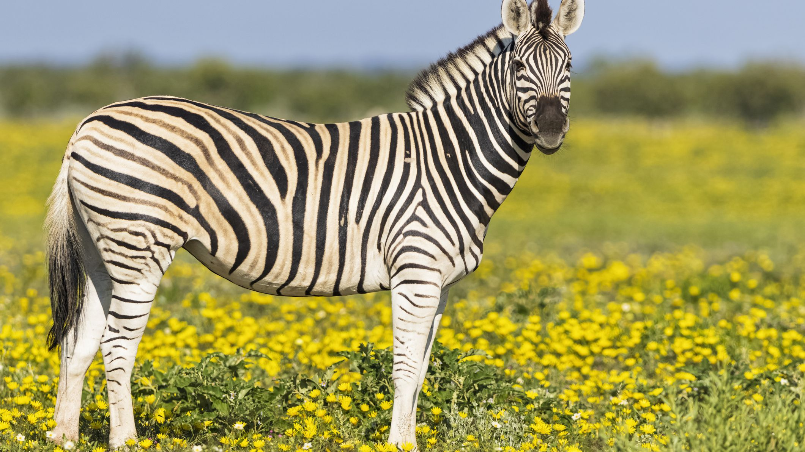

Our planet is home to three different species of zebra, the plains zebra, Grevy’s zebra and mountain zebra, all three species are native to Africa. The most common species is the plains zebra, which roams grasslands and woodland of eastern and southern Africa. Closely related to horses, zebras have thick bodies, thin legs, a tufted tail, and a long head and neck sporting a short mane. Their stripes perhaps serve to dazzle and confuse predators and biting insects, or to control the animal’s body heat. Because each individual’s stripes are unique, their stripes may also have a social purpose, helping zebras to recognise one other.  See Other Animals